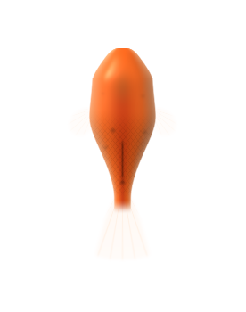
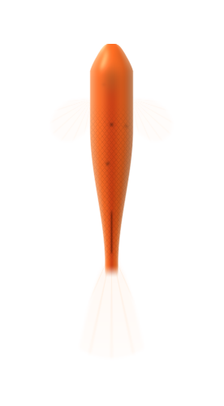
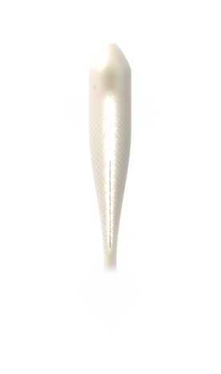
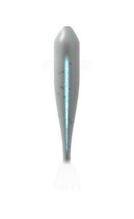
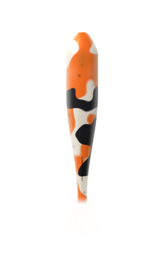
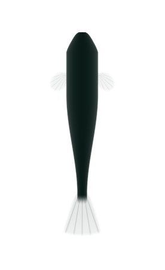

A cosy medaka-keeping game by Theramoo · for Android
Mr Medaka's Pond
Keep and breed medaka in a little backyard pond. Days pass sixty times faster than yours, and a pond year lasts one real week.
Tap or click the water to feed them. Open it full screen →
What it's like
- Real water. Ammonia, nitrite and nitrate, green water and the bacteria that tame it. Plants soak up waste; water changes put things right.
- Real breeding. Colour, body and fins are inherited separately. Hidden recessive genes, line breeding, and the rare brand-new colour.
- Fish with natures. Shy, curious, playful, loving, feisty. A crowded tub turns scrappy.
- Your yard, your way. Pots, containers and ponds; a zen garden or a lawn; lotus in real cultivar colours.
- Trade face to face. Two phones, one code, and fish cross the gap in a little bag.
- Breathe. Now and then a breeze carries a line from Zen, the Tao Te Ching or Zhuangzi.
Meet the fish









?How many medaka are there?
32 colours × 5 patterns × 4 shines × 3 bodies × 4 fins × 3 eyes
= 23,040 different fish
The 32 colours alone: 6 common · 9 uncommon · 10 rare · 7 ultra-rare. Colour strength and hidden genes sit on top of that.
Watch it
Sound on. The seasons turn while you live your life.
How it plays
1Hang a mop. Females lay their eggs on it at first light, safe from the grown-ups.
2Move the mop. Lift it, eggs and all, into a tub with no adults in it.
3Raise the fry. Green water and little food, and they grow up in a few days.